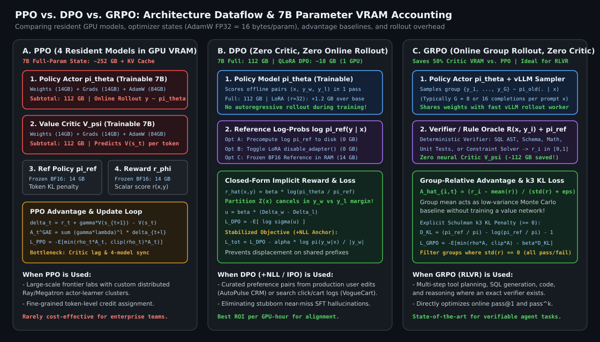
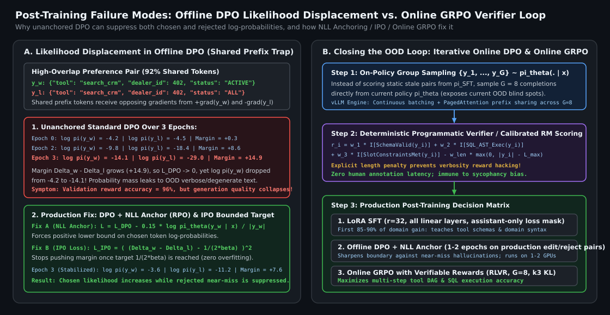

Post-Training Alignment: DPO vs. PPO vs. GRPO — Mathematical Derivations, VRAM Footprints, and Production Trade-Offs
How PPO, DPO, and GRPO emerge from the same KL-regularized reward maximization objective, why PPO requires $4$ models in VRAM ($252\text{ GB}$ for 7B full-parameter) while DPO and GRPO eliminate the value critic, how offline DPO suffers from distribution shift and likelihood displacement, and a pragmatic decision framework for choosing between LoRA SFT, offline DPO, and online GRPO in production.
1. One Objective, Three Optimization Paths
After Supervised Fine-Tuning (SFT) teaches a base model the format and domain vocabulary of downstream tasks, post-training alignment shapes the policy $\pi_\theta(y \mid x)$ to prefer high-utility, grounded responses over plausible-sounding mistakes. Virtually all modern post-training algorithms—PPO (Ouyang et al., 2022), DPO (Rafailov et al., 2023), and GRPO (Shao et al., 2024)—start from the same KL-regularized reward maximization problem:
where $\pi_{\text{ref}}$ is the frozen SFT checkpoint and $\beta > 0$ controls how far $\pi_\theta$ may deviate from $\pi_{\text{ref}}$ before the reverse-KL penalty dominates. Where the three methods diverge is how they represent the reward $r(x,y)$, how they estimate baselines/advantages, and whether they sample online from $\pi_\theta$ during training.
2. Mathematical Derivations: PPO vs. DPO vs. GRPO
2.1 PPO: Explicit Reward Model + Learned Token-Level Value Critic
In standard RLHF with Proximal Policy Optimization (PPO), we first train a separate neural reward model $r_\phi(x, y)$ on preference pairs. During RL training, the policy $\pi_\theta$ autoregressively generates responses $y = (y_1, \dots, y_T)$ online. To prevent the policy from collapsing into reward-hacking degenerate text, the per-token KL penalty is folded directly into the token-level shaped reward:
Because the terminal reward $r_\phi(x, y)$ only arrives at the final token $T$, credit assignment across earlier tokens $t < T$ requires a learned Value Critic $V_\psi(x, y_{<t})$—typically a model of the same parameter count as $\pi_\theta$—to compute Generalized Advantage Estimation ($\text{GAE}(\gamma, \lambda)$):
PPO then updates $\pi_\theta$ via the clipped importance-sampling surrogate objective over token ratios $\rho_t(\theta) = \frac{\pi_\theta(y_t \mid s_t)}{\pi_{\theta_{\text{old}}}(y_t \mid s_t)}$:
2.2 DPO: Closed-Form Optimal Policy Inversion (Zero Online Rollouts, Zero Critic)
Rafailov et al. (2023) observed that the KL-regularized objective $\mathcal{J}(\pi)$ has an exact, closed-form Gibbs distribution optimum for any reward function $r(x,y)$:
Solving this equation algebraically for the reward $r(x, y)$ expresses the reward in terms of the optimal policy $\pi^*$ and reference policy $\pi_{\text{ref}}$:
When we substitute this reparameterized reward into the Bradley–Terry pairwise preference model $P(y_w \succ y_l \mid x) = \sigma\!\left(r(x, y_w) - r(x, y_l)\right)$, the intractable partition function $\beta \log Z(x)$—which depends only on the prompt $x$—cancels out identically between $y_w$ and $y_l$, yielding the DPO loss:
Defining the implicit reward margin $u_\theta(x, y_w, y_l) = \beta \Delta_w - \beta \Delta_l$ where $\Delta_y = \log \frac{\pi_\theta(y\mid x)}{\pi_{\text{ref}}(y\mid x)}$, the gradient with respect to $\theta$ is:
2.3 GRPO: Online Group Rollout Baseline without a Value Critic
While DPO is simple and memory-efficient, it is strictly offline by default. Conversely, PPO is online but pays an enormous memory and variance tax to train the token-level value network $V_\psi$. Group Relative Policy Optimization (GRPO) (Shao et al., 2024) gets the best of both worlds: for each prompt $x$, it samples a group of $G$ completions $\{y_1, y_2, \dots, y_G\} \sim \pi_{\theta_{\text{old}}}(\cdot \mid x)$ online, scores each completion with a reward model or deterministic rule verifier $r_i = R(x, y_i)$, and uses the group mean and standard deviation as the baseline:
Instead of folding the KL penalty into the reward, GRPO adds an explicit, unbiased, strictly non-negative per-token KL divergence estimator (Schulman’s $k_3$ estimator) directly to the clipped loss:

| Dimension | PPO (Standard RLHF) | DPO (Direct Preference Opt.) | GRPO (Group Relative Policy Opt.) |
|---|---|---|---|
| Models in GPU Memory | $4$: $\pi_\theta$ (train), $V_\psi$ (train), $\pi_{\text{ref}}$ (frozen), $r_\phi$ (frozen) | $2$: $\pi_\theta$ (train), $\pi_{\text{ref}}$ (frozen) — or $1$ with LoRA / precomputed $\pi_{\text{ref}}$ | $2$ (+ Verifier/RM): $\pi_\theta$ (train), $\pi_{\text{ref}}$ (frozen), plus rule verifier or $r_\phi$ |
| 7B Full-Param State VRAM | $36\Psi \approx 252\text{ GB}$ (weights + FP32 AdamW) | $18\Psi \approx 126\text{ GB}$ ($112\text{ GB}$ precomputed $\pi_{\text{ref}}$; $18\text{ GB}$ LoRA) | $18\Psi \approx 126\text{ GB}$ + vLLM KV-cache for $G$ rollouts |
| Data Regime | Online autoregressive rollouts $y \sim \pi_\theta$ | Offline static preference triples $(x, y_w, y_l)$ (or iterative online DPO) | Online group rollouts $\{y_1,\dots,y_G\} \sim \pi_{\theta_{\text{old}}}$ per prompt |
| Baseline / Credit Assignment | Learned per-token Value Critic $V_\psi(s_t)$ via GAE | Implicit pairwise log-ratio margin $\beta(\Delta_w - \Delta_l)$ | Empirical group z-score $(r_i - \mu_G)/(\sigma_G + \epsilon)$ |
| Primary Failure Mode | Critic instability, reward hacking, high engineering complexity | Offline distribution shift, likelihood displacement, verbosity bias | Zero-variance groups (all $G$ rollouts fail or pass identically: $\sigma_G = 0$) |
3. Deep Dive: Offline Distribution Shift & Likelihood Displacement in DPO
When discussing DPO in technical interviews, understanding its failure modes is just as important as deriving its loss:
3.1 Offline Distribution Shift
In offline DPO, the preference dataset $\mathcal{D}_{\text{pref}} = \{(x, y_w, y_l)\}$ is collected once before training (typically from $\pi_{\text{SFT}}$ or an external teacher). As $\pi_\theta$ updates over epochs, its high-probability support drifts away from $\mathcal{D}_{\text{pref}}$. Because DPO never samples from $\pi_\theta$ or queries a verifier on $\pi_\theta$’s new generations, the policy can assign high probability to out-of-distribution (OOD) completions that never appeared as $y_l$ in the static dataset.
3.2 Likelihood Displacement & Length Bias
Notice that the DPO loss depends only on the difference $\Delta_w - \Delta_l = \log\frac{\pi_\theta(y_w\mid x)}{\pi_{\text{ref}}(y_w\mid x)} - \log\frac{\pi_\theta(y_l\mid x)}{\pi_{\text{ref}}(y_l\mid x)}$. During training, it is mathematically possible for $\mathcal{L}_{\text{DPO}}$ to decrease while both $\log \pi_\theta(y_w \mid x)$ and $\log \pi_\theta(y_l \mid x)$ decrease, so long as $\log \pi_\theta(y_l \mid x)$ drops faster! This phenomenon—known as likelihood displacement (Pal et al., 2024; Razin et al., 2024)—occurs especially when $y_w$ and $y_l$ share nearly identical prefixes (e.g., differing only in a single SQL clause or price token). Pushing down the rejected sequence inadvertently suppresses shared valid tokens and leaks probability mass onto verbose, repetitive tail sequences.
Three practical fixes eliminate likelihood displacement and length bias in production DPO runs:
- SFT Negative Log-Likelihood Anchor (RPO / CPO-style): Add a small NLL stabilization weight $\alpha \in [0.1, 0.25]$ on the winning completion $y_w$ so $\log \pi_\theta(y_w \mid x)$ is guaranteed to remain anchored:
$$\mathcal{L}_{\text{DPO+NLL}}(\theta) = \mathcal{L}_{\text{DPO}}(\theta) - \alpha \frac{1}{|y_w|} \sum_{t=1}^{|y_w|} \log \pi_\theta(y_{w,t} \mid x, y_{w,<t}).$$
- Identity Preference Optimization (IPO, Azar et al., 2024): Replaces the unbounded logistic loss with a squared loss toward a finite target margin $\frac{1}{2\beta}$, preventing the policy from driving $\Delta_w - \Delta_l \to +\infty$ on deterministic pairs:
$$\mathcal{L}_{\text{IPO}}(\theta) = \mathbb{E}_{(x, y_w, y_l)}\!\left[\left(\left(\log \frac{\pi_\theta(y_w\mid x)}{\pi_{\text{ref}}(y_w\mid x)} - \log \frac{\pi_\theta(y_l\mid x)}{\pi_{\text{ref}}(y_l\mid x)}\right) - \frac{1}{2\beta}\right)^{\!2}\right].$$
- Length-Normalized Reference-Free Margin (SimPO, Meng et al., 2024): Normalizes log-probabilities by sequence length $|y|$ with a target reward margin $\gamma > 0$ so longer responses do not automatically accumulate larger log-ratio magnitudes.

4. Pragmatic Production Playbook: When to Use SFT, DPO, or GRPO
In real-world engineering teams, not every problem should be solved with RL. Here is the exact progression we follow across production workloads:
- Stage 1 — High-Hygiene LoRA/QLoRA SFT + Deterministic Harness Verifiers (Solves 85–90% of Enterprise Tasks): When adapting an 8B/70B model to emit domain-specific CRM tool calls (AutoPulse CRM) or structured fashion catalog queries (VogueCart), curating $15\text{k}\text{--}50\text{k}$ verified trajectories and training rank-$32$ LoRA adapters across all linear projections ($\mathbf{W}_q, \mathbf{W}_k, \mathbf{W}_v, \mathbf{W}_o, \mathbf{W}_{\text{gate}}, \mathbf{W}_{\text{up}}, \mathbf{W}_{\text{down}}$) with assistant-only loss masking (`labels = -100` on prompt/tool-obs tokens) is fast, stable, and reproducible.
- Stage 2 — Offline DPO + NLL Anchor (Eliminating Stubborn Near-Misses & Tone/Formatting Drift): SFT teaches the model what to imitate, but because cross-entropy loss only maximizes $\log \pi_\theta(y_w \mid x)$, it does not explicitly penalize high-probability near-misses $y_l$ that the SFT model still assigns $15\%$ probability mass to (such as subtle price-hallucination phrasing or overly verbose CRM notes). Constructing $(x, y_w, y_l)$ pairs where $y_l$ is sampled directly from $\pi_{\text{SFT}}$ and rejected by our deterministic verifier or human edits, then running 1–2 epochs of LoRA DPO ($\beta = 0.1$, $\alpha_{\text{NLL}} = 0.15$, $\text{lr} = 5\times 10^{-6}$), carves away those specific failure modes at minimal compute cost.
- Stage 3 — Online GRPO with Verifiable Rewards (RLVR for Multi-Step Tool Planning & SQL/Code Generation): When the task has an automated, deterministic programmatic verifier $R(x, y) \in \{0, 1\}$ (e.g., SQL execution against a sandbox DB, unit-test pass rate, or multi-constraint slot satisfaction in an agent planner) and the model needs to discover multi-step reasoning strategies beyond static demonstrations, online GRPO with $G=8$ rollouts directly optimizes pass rate without requiring a fragile neural reward model or value critic.
5. Reference PyTorch Implementation: DPO (+NLL / IPO) & GRPO Loss Functions
Below is a clean, self-contained PyTorch implementation of masked sequence log-probability computation, stabilized DPO (with NLL anchor and IPO support), and token-level GRPO with the Schulman $k_3$ KL estimator.
import torch
import torch.nn.functional as F
from typing import Tuple
def compute_masked_seq_logprobs(
logits: torch.Tensor, # [B, T, V]
labels: torch.Tensor, # [B, T], prompt tokens set to -100
) -> Tuple[torch.Tensor, torch.Tensor]:
"""Computes sum of token log-probs and valid token counts over response tokens only."""
shift_logits = logits[:, :-1, :].contiguous()
shift_labels = labels[:, 1:].contiguous()
valid_mask = (shift_labels != -100)
safe_labels = shift_labels.masked_fill(~valid_mask, 0)
log_probs = F.log_softmax(shift_logits, dim=-1)
token_log_probs = torch.gather(log_probs, dim=-1, index=safe_labels.unsqueeze(-1)).squeeze(-1)
token_log_probs = token_log_probs * valid_mask.to(token_log_probs.dtype)
seq_logprob_sum = token_log_probs.sum(dim=-1) # [B]
valid_token_count = valid_mask.sum(dim=-1).clamp(min=1) # [B]
return seq_logprob_sum, valid_token_count
def dpo_with_nll_or_ipo_loss(
pi_w_logp: torch.Tensor, # [B] sum log pi_theta(y_w | x)
pi_l_logp: torch.Tensor, # [B] sum log pi_theta(y_l | x)
ref_w_logp: torch.Tensor, # [B] sum log pi_ref(y_w | x)
ref_l_logp: torch.Tensor, # [B] sum log pi_ref(y_l | x)
w_lengths: torch.Tensor, # [B] token length |y_w|
beta: float = 0.1,
nll_alpha: float = 0.15, # >0 prevents likelihood displacement
loss_type: str = "dpo", # "dpo" or "ipo"
) -> dict:
delta_w = pi_w_logp - ref_w_logp
delta_l = pi_l_logp - ref_l_logp
logits_diff = delta_w - delta_l
if loss_type == "ipo":
target_margin = 1.0 / (2.0 * beta)
pref_loss = ((logits_diff - target_margin) ** 2).mean()
else:
pref_loss = -F.logsigmoid(beta * logits_diff).mean()
# NLL anchor on chosen completion (normalized by response length)
nll_loss = -(pi_w_logp / w_lengths).mean()
total_loss = pref_loss + nll_alpha * nll_loss
with torch.no_grad():
implicit_reward_w = beta * delta_w
implicit_reward_l = beta * delta_l
reward_acc = (implicit_reward_w > implicit_reward_l).float().mean()
return {
"loss": total_loss,
"pref_loss": pref_loss.detach(),
"nll_loss": nll_loss.detach(),
"reward_accuracy": reward_acc,
"reward_margin": (implicit_reward_w - implicit_reward_l).mean(),
}
def grpo_token_loss(
curr_token_logp: torch.Tensor, # [B*G, T] log pi_theta(y_t | s_t)
old_token_logp: torch.Tensor, # [B*G, T] log pi_old(y_t | s_t)
ref_token_logp: torch.Tensor, # [B*G, T] log pi_ref(y_t | s_t)
response_mask: torch.Tensor, # [B*G, T] binary mask for assistant tokens
rewards: torch.Tensor, # [B, G] scalar verifier/RM scores per group
clip_eps: float = 0.2,
beta_kl: float = 0.04,
) -> torch.Tensor:
# 1. Compute group-relative normalized advantages: [B, G] -> [B*G, 1]
mean_r = rewards.mean(dim=-1, keepdim=True)
std_r = rewards.std(dim=-1, keepdim=True)
advantages = ((rewards - mean_r) / (std_r + 1e-6)).reshape(-1, 1)
# 2. Token-level importance sampling ratio & clipped surrogate
ratio = torch.exp(curr_token_logp - old_token_logp)
surr1 = ratio * advantages
surr2 = torch.clamp(ratio, 1.0 - clip_eps, 1.0 + clip_eps) * advantages
policy_obj = torch.minimum(surr1, surr2)
# 3. Unbiased positive Schulman k3 KL estimator: exp(log_ref - log_curr) - (log_ref - log_curr) - 1
log_r_diff = ref_token_logp - curr_token_logp
kl_k3 = torch.exp(log_r_diff) - log_r_diff - 1.0
per_token_loss = -(policy_obj - beta_kl * kl_k3) * response_mask
seq_lengths = response_mask.sum(dim=-1).clamp(min=1)
return (per_token_loss.sum(dim=-1) / seq_lengths).mean()